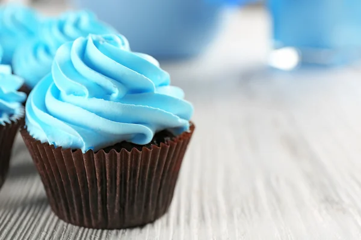
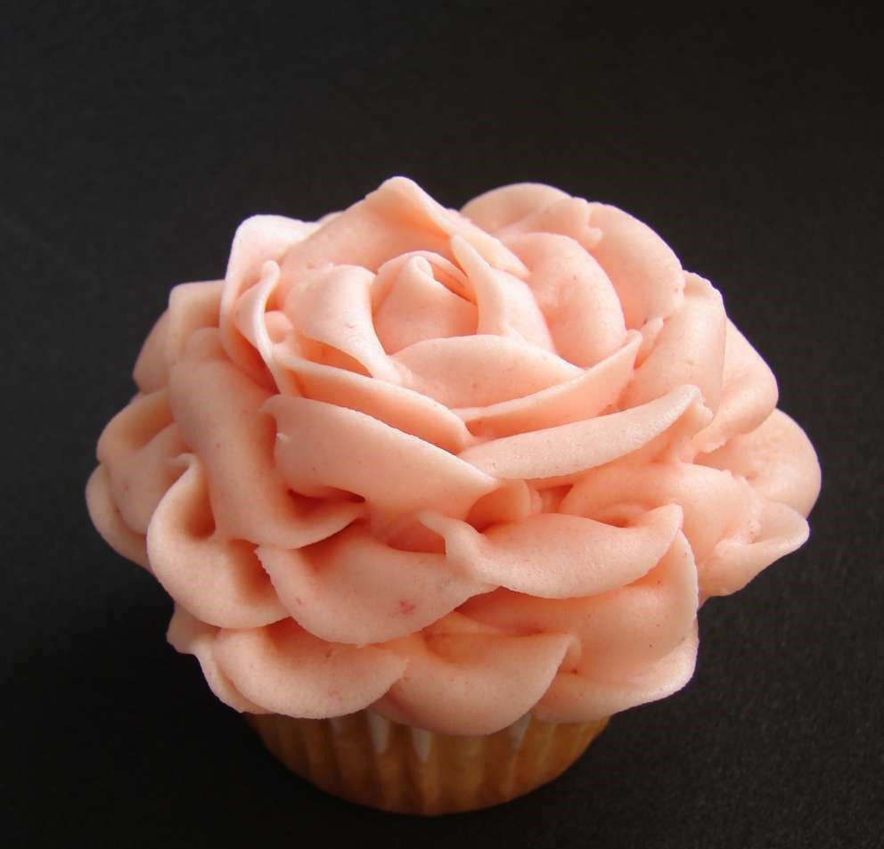
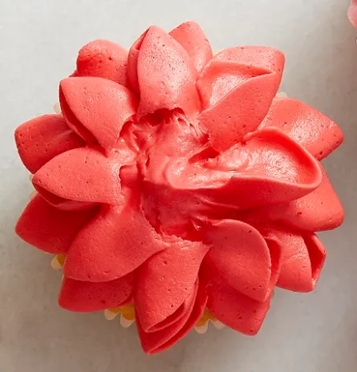
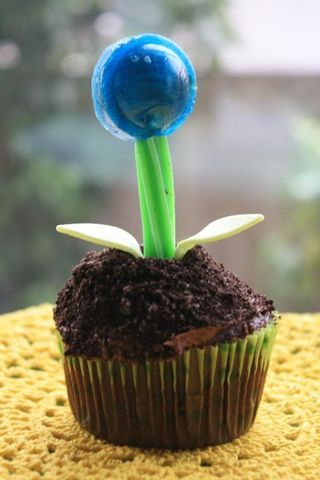
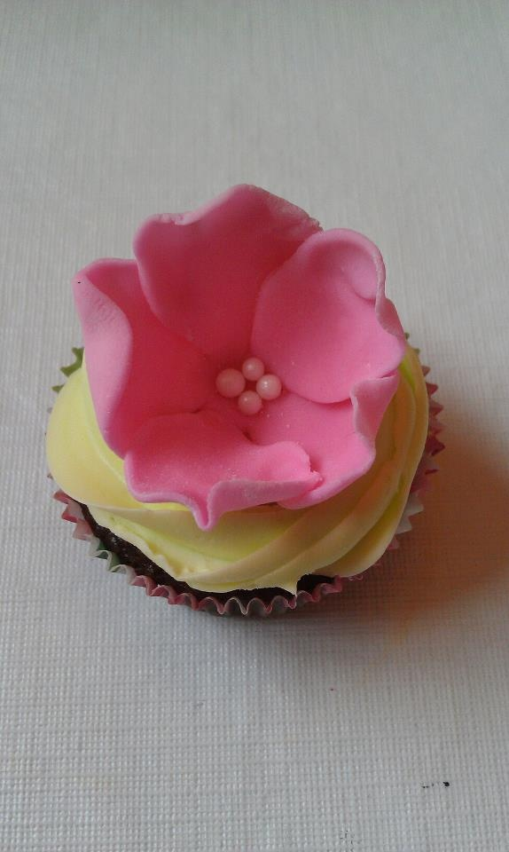
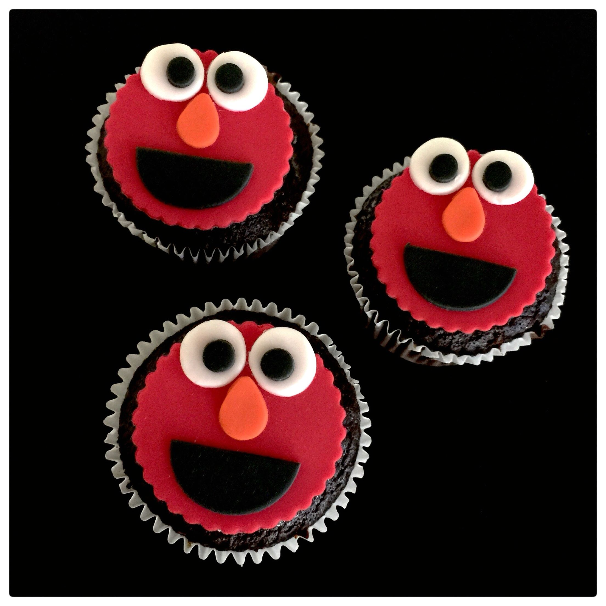
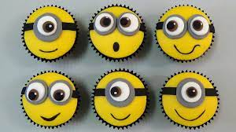
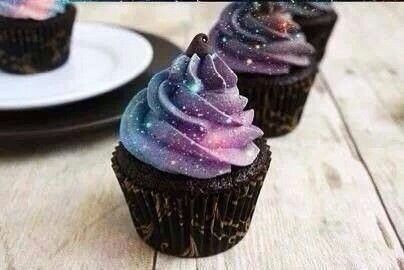
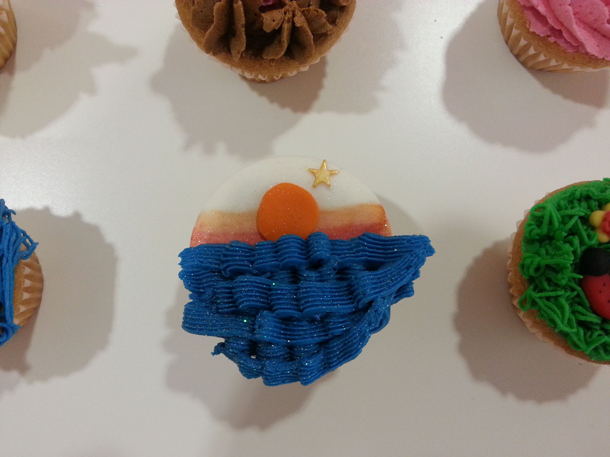

Catalogo
Primavera Azul
Cupcake con un delicioso sabor a caramelo,mora azul y melocoton con un exquisito olor a mora azul

Flor rosa
Cupcake con sabor a Vainilla, maracuya y fresa, con un exquisito olor a flores

Flor Carmesi
Cupcake con una flor de fondan rojo,con sabor a fresas y frutos rojo

Flor de tierra
Cupcake con sabor a chocolate y nueces,con fondan de mora, limon y chocolate blanco en forma de flor azul

Flor de loto
Cupcake con sabor a vainilla y chocolate, con una capa de fondan sabor a vainilla y otra capa de fondan sabor a frutilla en forma de flor de lotto

Elmo
Cupcake de chocolate con fondan de chocolate, chocolate blanco y naranja, en forma de cara del famoso personaje Elmo

Minion
Cupcake de vainilla, con fondan de banano, chocolate blanco y chocolate negro en forma de Minion

Galaxia
Cupcake de chocolate, y fondan en forma de galaxia con sabor a chicle y chocalate negro

Atardecer
Cupcake de vainilla con una cubierta de chocolate blanco, con fondan azul y anarajando, sabor a mora azul y naranja
